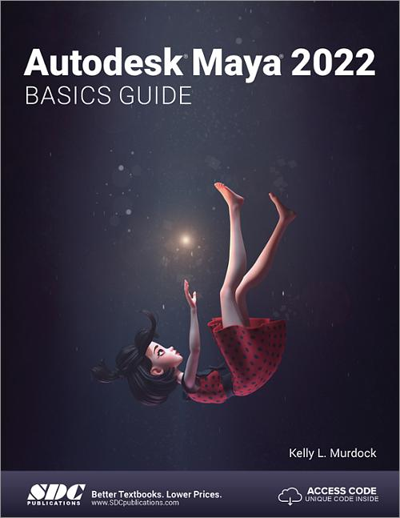

بكالوريوس التفاعل بين الإنسان والحاسب
اسم المقرر: النمذجة ثلاثية الأبعاد والرسوم المتحركة
رمز المقرر: HCI4808
البرنامج: بكالوريوس التفاعل بين الإنسان والحاسب
القسم: هندسة البرمجيات
الكلية: الحاسبات
الجهة: جامعة أم القرى
عدد الساعات المعتمدة: 3
نوع المقرر: اختياري
المستوى: السنة الثالثة (المستوى السادس) أو السنة الرابعة (المستوى الثامن)
آخر تحديث: 22/04/2025
يقدم هذا المقرر مقدمة متعمقة في النمذجة ثلاثية الأبعاد والرسوم المتحركة، حيث يزوّد الطلاب بالمهارات التقنية والإبداعية اللازمة لتصميم وتحريك الأصول ثلاثية الأبعاد. سيتعرف الطلاب على مبادئ التصميم ثلاثي الأبعاد، والإكساء، والهيكلة العظمية، والتحريك، والإخراج النهائي، مع التركيز على إنشاء أصول تُستخدم في الألعاب والمحاكاة والوسائط التفاعلية الأخرى. باستخدام أدوات احترافية مثل Autodesk Maya وBlender وUnreal Engine، سيكتسب الطلاب خبرة عملية في إنشاء نماذج ورسوم متحركة ثلاثية الأبعاد مع ربط أعمالهم بمبادئ التفاعل بين الإنسان والحاسب (HCI) لتعزيز سهولة الاستخدام وجاذبية التجربة.
| الرمز | مخرجات التعلم | التصنيف | ارتباطها بمخرجات البرنامج | استراتيجيات التدريس | طرق التقييم |
|---|---|---|---|---|---|
| 1.1 | فهم المبادئ الأساسية للنمذجة والتحريك ثلاثي الأبعاد مثل الطوبولوجي والهيكلة والتحريك بالإطارات المفتاحية. | المعرفة والفهم | K1 | محاضرات، مناقشات | واجبات، اختبارات |
| 2.1 | استخدام أدوات النمذجة والتحريك الاحترافية مثل Maya وBlender. | المهارات | S1 | محاضرات، مناقشات | اختبارات، مشروع |
| 2.2 | تطوير رسوم متحركة واقعية أو أسلوبية باستخدام التحريك بالإطارات المفتاحية أو التحريك الإجرائي. | المهارات | S2 | محاضرات، مناقشات | اختبارات، مشروع |
| 2.3 | دمج الأصول ثلاثية الأبعاد داخل محركات الألعاب مثل Unreal أو Unity. | المهارات | S3 | محاضرات، مناقشات | اختبارات، مشروع |
| 3.0 | القيم والاستقلالية والمسؤولية |
إجمالي الساعات: 60
| التقييم | الأسبوع | النسبة |
|---|---|---|
| الواجبات | 3-14 | 10% |
| المشروع | 3-14 | 30% |
| الاختبار النصفي | 7-8 | 20% |
| الاختبار النهائي | 16-17 | 40% |
